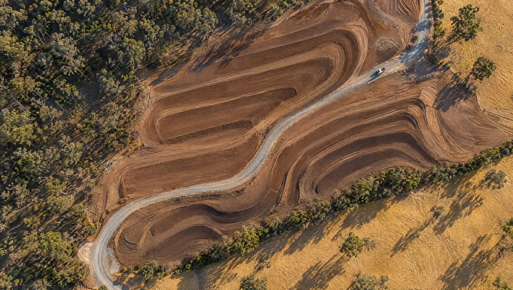
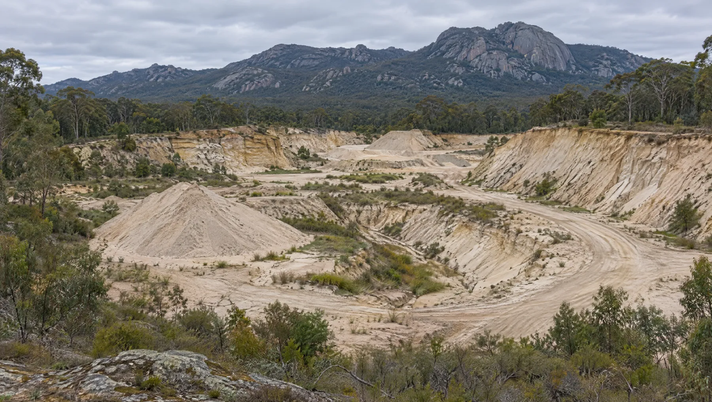
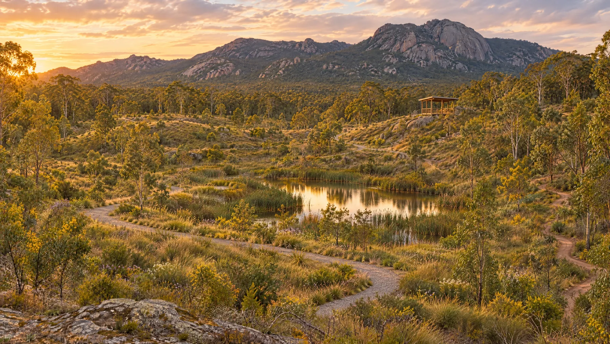
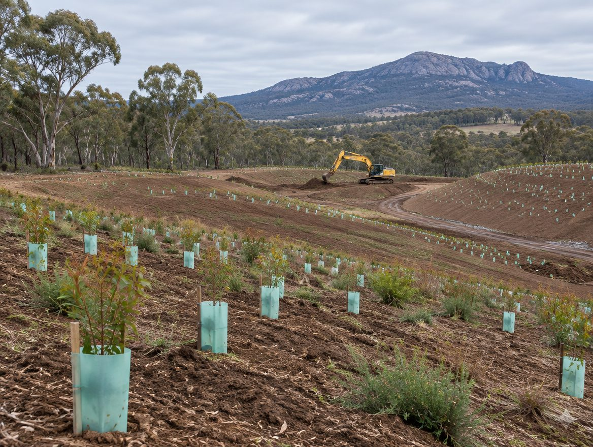

01Why we exist
LG Recycling wasn't set up to be just another recycling facility. It was set up because this property has a story, and it deserves a future.

Home / Our story
LG Recycling stands for Langi Ghiran Recycling: a soil-recycling and land-rehabilitation operation near Warrak and Ararat in Victoria's Grampians region, on a property adjoining the western boundary of Langi Ghiran State Park. A Recycle initiative.
LG Recycling wasn't set up to be just another recycling facility. It was set up because this property has a story, and it deserves a future.
The property was historically used for sand extraction, as a sand mine and quarry operated by the City of Ararat. Like many former extraction sites, that activity changed the original landform and left areas that need long-term rehabilitation.
The Furnari family bought the property in the early 1990s. Since then it has been home to many weekends of camping, motorbike riding, exploring and bushwalking, and a place for our six children to connect with Country.
Recycle Group's connection with the property began in 1993. Over more than three decades, that connection has grown into a bigger question:
Could recycling provide the resources and the economic foundation to repair the very landscape it happens on?
LG Recycling is our answer. By receiving and processing suitable soil and carrying out progressive rehabilitation works, we connect resource recovery directly to land restoration.
Instead of seeing the property only through its industrial past, we're looking at what it could become over the next 10, 20, 30 and 50 years.
From sand mine to something special
For decades, resources were removed from this property. Now the land is being rehabilitated and turned into a downhill mountain-bike park, with beginner, intermediate and expert runs, a kids’ jump park, and a pulley lift to take riders back up the hill.


Former quarry The visionIllustrative concept only, not a photograph of the property or the final track design.
LG Recycling deliberately looks beyond the working life of the facility. The former sand quarry is being rehabilitated and turned into a downhill mountain-bike park: three runs graded beginner, intermediate and expert, a kids’ jump park below them, a pulley lift that takes riders back up the hill, and 16 glamping sites off to the side. Around it, the aim is a restored landscape of native vegetation, habitat and open space for the community.
Where the scars of extraction have softened.
Where vegetation has returned and habitat is expanding.
Where riders take the lift up and ride the track down, and families spend time outdoors.
Where visitors can take in the landscape beside Langi Ghiran.
The project already has support from community groups and from bike manufacturers in Australia and overseas.
If future generations find it hard to imagine that parts of the property were once a sand quarry, the rehabilitation will have succeeded.
Success isn't measured only in tonnes of soil recycled. It's also measured in:
Progress figures (hectares rehabilitated, tonnes recovered) will be published here once they're being measured.
LG Recycling is a Recycle initiative. Recycle is an Australian resource-recovery business developing practical solutions for materials that might otherwise be wasted. Across all of Recycle's work, the philosophy is the same: find a better use, recover the resource, reduce disposal, and create a measurable environmental outcome.
At LG Recycling, that outcome will ultimately be visible in the landscape itself.
Our home. Our responsibility.
We're fortunate to operate beside one of western Victoria's most distinctive natural landscapes, and we intend to leave our part of it better than we found it.

Got suitable soil?